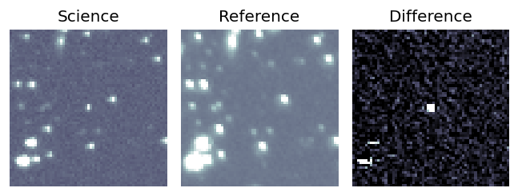
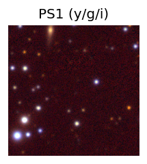
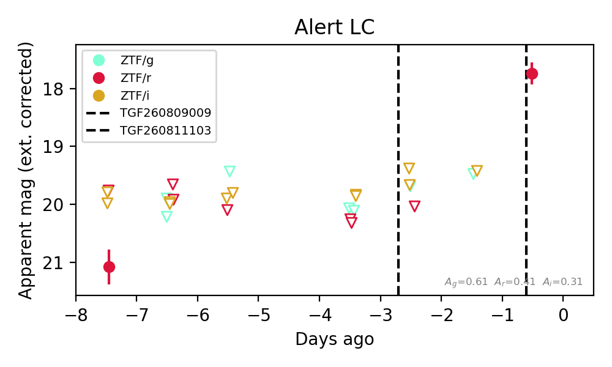
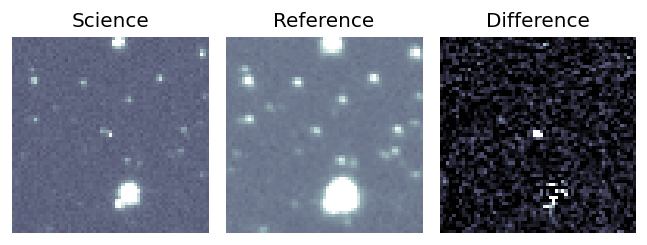
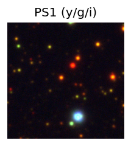
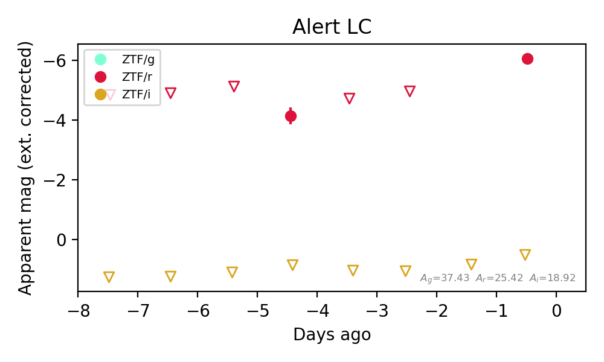
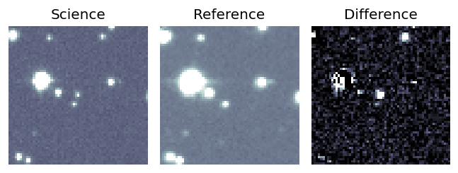
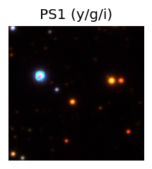
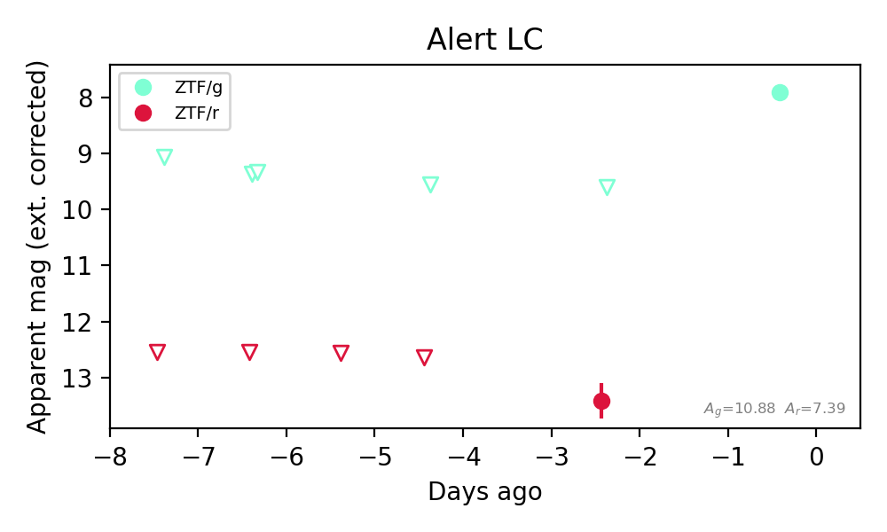

Candidate List 20260811Last night — ZTF: 2,687 passed basic cuts (266 young) · LSST: 0 passed basic cuts (0 young)Previous Day Next Day
Section 1: New Sources (age<1d) Section 2: Old (1-5d) sources observed last nightplaceholder
Section 1: New Afterglow/FBOT Cands Last Night (1)
1. [ZTF] ZTF26abnktnq (FBOT?) [Back to Top] [Share] [Trigger Swift] [Fritz Alert] [Fritz Source] [Lasair]RA, Dec: 36.63539, 31.93764 2h26m32.49s, 31d56m15.49sGalactic (l, b): 145.458, -26.74061 ext(g-r) = 0.079


TESS: Sectors [18 58 85]
PS1: 0 sources in 3 arcsec
LegacySurvey: 1 sources in 3 arcsec Closest: d = 0.11 arcsec, 146.9 deg (east of north) photoz=1.15 (68% bounds 0.61, 1.4), type=REX peak abs mag (ext. corrected) = -27.94 (68% bounds -26.26, -28.47)

Extinction-corrected gr color:
From alerts: -0.18 +/- 0.07 mag
Rise Rate:
g: 1.11 mag/day
r: 3.53 mag/day
Fade Rate:
Section 2: Older Sources Observed Last Night (11)
0. [ZTF] ZTF26ablsebw (Afterglow?FBOT?) [Back to Top] [Share] [Trigger Swift] [Fritz Alert] [Fritz Source] [Lasair]RA, Dec: 5.07927, -9.97055 0h20m19.03s, -9d-58m-13.97sGalactic (l, b): 98.3061, -71.33886 ext(g-r) = 0.042


TESS: Sectors [ 3 42 70]
PS1: 0 sources in 3 arcsec
LegacySurvey: 1 sources in 3 arcsec Closest: d = 0.39 arcsec, 141.2 deg (east of north) photoz=0.16 (68% bounds 0.12, 0.21), type=REX peak abs mag (ext. corrected) = -21.48 (68% bounds -20.97, -22.15)

Extinction-corrected gr color:
From alerts: -0.19 +/- 0.08 mag
Extinction-corrected gi color:
From alerts: -0.3 +/- 0.09 mag
Extinction-corrected ri color:
From alerts: -0.11 +/- 0.09 mag
Rise Rate:
g: 1.05 mag/day
r: 0.08 mag/day
i: 0.12 mag/day
Fade Rate:
g: 0.39 mag/day
1. [ZTF] ZTF26abmjjnm (FBOT?) [Back to Top] [Share] [Trigger Swift] [Fritz Alert] [Fritz Source] [Lasair]RA, Dec: 12.30651, 35.56105 0h49m13.56s, 35d33m39.77sGalactic (l, b): 122.42566, -27.30853 ext(g-r) = 0.058


TESS: Sectors [57 84]
PS1: 1 source in 3 arcsec Closest: d = 0.09 arcsec photoz=0.09+/-0.02 peak abs mag = -19.97
LegacySurvey: 0 sources in 3 arcsec

Extinction-corrected gr color:
From alerts: -0.16 +/- 0.12 mag
Rise Rate:
g: 0.31 mag/day
r: 0.27 mag/day
Fade Rate:
2. [ZTF] ZTF26abmrebm (Afterglow?) [Back to Top] [Share] [Trigger Swift] [Fritz Alert] [Fritz Source] [Lasair]RA, Dec: 10.85691, 22.94891 0h43m25.66s, 22d56m56.07sGalactic (l, b): 120.52848, -39.88546 ext(g-r) = 0.037


TESS: Sectors [17 57 84]
PS1: 0 sources in 3 arcsec
LegacySurvey: 1 sources in 3 arcsec Closest: d = 1.92 arcsec, 353.0 deg (east of north) photoz=0.07 (68% bounds 0.06, 0.08), type=SER peak abs mag (ext. corrected) = -18.39 (68% bounds -17.94, -18.67)

Extinction-corrected gr color:
From alerts: 0.08 +/- 0.15 mag
Consistent with synchrotron, g-r>0!
Rise Rate:
g: 0.51 mag/day
r: 0.4 mag/day
Fade Rate:
3. [ZTF] ZTF26abmyvdd (FBOT?) [Back to Top] [Share] [Trigger Swift] [Fritz Alert] [Fritz Source] [Lasair]RA, Dec: 328.0154, 25.50674 21h52m3.70s, 25d30m24.28sGalactic (l, b): 79.61732, -21.9112 ext(g-r) = 0.076


TESS: Sectors [56 82 83]
PS1: 0 sources in 3 arcsec
LegacySurvey: 1 sources in 3 arcsec Closest: d = 2.06 arcsec, 179.4 deg (east of north) photoz=0.17 (68% bounds 0.13, 0.22), type=EXP peak abs mag (ext. corrected) = -19.85 (68% bounds -19.15, -20.45)

Extinction-corrected gr color:
From alerts: -0.2 +/- 99 mag
Rise Rate:
g: 0.33 mag/day
Fade Rate:
4. [ZTF] ZTF26ablzevf (Afterglow?) [Back to Top] [Share] [Trigger Swift] [Fritz Alert] [Fritz Source] [Lasair]RA, Dec: 313.45725, 29.01498 20h53m49.74s, 29d 0m53.91sGalactic (l, b): 73.06708, -10.07781 ext(g-r) = 0.171


TESS: Sectors [ 15 41 55 82 120 121]
PS1: 1 source in 3 arcsec Closest: d = 0.28 arcsec photoz=0.47+/-0.34 peak abs mag = -23.07
LegacySurvey: 0 sources in 3 arcsec

Extinction-corrected gr color:
From alerts: -0.67 +/- 99 mag
Rise Rate:
g: 7.82 mag/day
Fade Rate:
g: 0.23 mag/day
5. [ZTF] ZTF26abneopl (Afterglow?) [Back to Top] [Share] [Trigger Swift] [Fritz Alert] [Fritz Source] [Lasair]RA, Dec: 0.14775, -14.30501 0h 0m35.46s, -14d-18m-18.05sGalactic (l, b): 77.64715, -72.53906 ext(g-r) = 0.033


TESS: Sectors [ 2 29 69 107]
PS1: 0 sources in 3 arcsec
LegacySurvey: 1 sources in 3 arcsec Closest: d = 1.35 arcsec, 356.6 deg (east of north) photoz=0.06 (68% bounds 0.05, 0.07), type=EXP peak abs mag (ext. corrected) = -17.79 (68% bounds -17.42, -18.28)

Extinction-corrected gr color:
From alerts: -0.52 +/- 0.28 mag
Extinction-corrected gi color:
From alerts: -0.63 +/- 0.29 mag
Extinction-corrected ri color:
From alerts: -0.11 +/- 0.32 mag
Consistent with synchrotron, g-r>0!
Rise Rate:
g: 0.2 mag/day
r: 0.92 mag/day
Fade Rate:
6. [ZTF] ZTF26abnhigh (FBOT?) [Back to Top] [Share] [Trigger Swift] [Fritz Alert] [Fritz Source] [Lasair]RA, Dec: 270.73966, 4.90685 18h 2m57.52s, 4d54m24.64sGalactic (l, b): 31.79925, 13.01329 ext(g-r) = 0.196


TESS: Sectors [ 80 118]
PS1: 1 source in 3 arcsec Closest: d = 1.87 arcsec photoz=0.62+/-0.33 peak abs mag = -25.13
LegacySurvey: 0 sources in 3 arcsec

Extinction-corrected gr color:
From alerts: -1.03 +/- 99 mag
Extinction-corrected ri color:
From alerts: 1.1 +/- 99 mag
Rise Rate:
r: 1.19 mag/day
Fade Rate:
7. [ZTF] ZTF26abnhuxp (FBOT?) [Back to Top] [Share] [Trigger Swift] [Fritz Alert] [Fritz Source] [Lasair]RA, Dec: 276.77191, 39.75438 18h27m5.26s, 39d45m15.78sGalactic (l, b): 67.76514, 21.35593 ext(g-r) = 0.04


TESS: Sectors [ 14 26 40 53 54 74 80 81 118 119]
PS1: 0 sources in 3 arcsec
LegacySurvey: 1 sources in 3 arcsec Closest: d = 5.10 arcsec, 55.0 deg (east of north) photoz=0.16 (68% bounds 0.06, 0.33), type=PSF peak abs mag (ext. corrected) = -20.21 (68% bounds -17.9, -21.91)

Extinction-corrected gr color:
From alerts: 1.07 +/- 99 mag
Rise Rate:
r: 0.94 mag/day
Fade Rate:
8. [ZTF] ZTF26abnhvld (FBOT?) [Back to Top] [Share] [Trigger Swift] [Fritz Alert] [Fritz Source] [Lasair]RA, Dec: 286.37047, 6.95333 19h 5m28.91s, 6d57m11.97sGalactic (l, b): 40.71725, 0.06301 ext(g-r) = 12.004


TESS: Sectors [54 80]
PS1: 1 source in 3 arcsec Closest: d = 2.75 arcsec photoz=0.18+/-0.25 peak abs mag = -45.82
LegacySurvey: 0 sources in 3 arcsec

Extinction-corrected ri color:
From alerts: -6.57 +/- 99 mag
Rise Rate:
r: 0.55 mag/day
Fade Rate:
9. [ZTF] ZTF26abnivjj (FBOT?) [Back to Top] [Share] [Trigger Swift] [Fritz Alert] [Fritz Source] [Lasair]RA, Dec: 302.57361, 30.88513 20h10m17.67s, 30d53m6.45sGalactic (l, b): 69.01911, -1.35123 ext(g-r) = 3.49


TESS: Sectors [ 14 41 54 55 75 81 82 120]
PS1: 1 source in 3 arcsec Closest: d = 4.60 arcsec photoz=0.17+/-0.14 peak abs mag = -31.67
LegacySurvey: 0 sources in 3 arcsec

Extinction-corrected gr color:
From alerts: -3.82 +/- 99 mag
Rise Rate:
g: 0.86 mag/day
Fade Rate:
10. [ZTF] ZTF26abnjflk (Afterglow?) [Back to Top] [Share] [Trigger Swift] [Fritz Alert] [Fritz Source] [Lasair]RA, Dec: 339.36275, 64.43868 22h37m27.06s, 64d26m19.23sGalactic (l, b): 109.09718, 5.22815 ext(g-r) = 1.373


TESS: Sectors [17 18 24 57 58 77 78 84 85]
SDSS (<15 kpc):Found SDSS phot-z: z=0.41; peak abs mag = -25.71
PS1: 0 sources in 3 arcsec
LegacySurvey: 0 sources in 3 arcsec

Extinction-corrected gr color:
From alerts: -2.26 +/- 99 mag
Rise Rate:
g: 0.53 mag/day
r: 1.45 mag/day
Fade Rate:
g: 0.75 mag/day